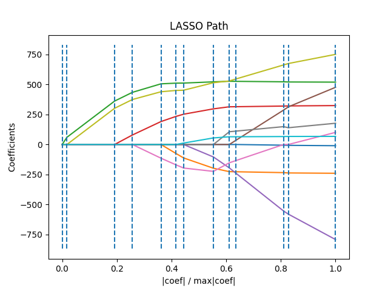

Note
Go to the end to download the full example code or to run this example in your browser via Binder
Lasso path using LARS¶
Computes Lasso Path along the regularization parameter using the LARS algorithm on the diabetes dataset. Each color represents a different feature of the coefficient vector, and this is displayed as a function of the regularization parameter.
Computing regularization path using the LARS ...
.
# Author: Fabian Pedregosa <fabian.pedregosa@inria.fr>
# Alexandre Gramfort <alexandre.gramfort@inria.fr>
# License: BSD 3 clause
import matplotlib.pyplot as plt
import numpy as np
from sklearn import datasets, linear_model
X, y = datasets.load_diabetes(return_X_y=True)
print("Computing regularization path using the LARS ...")
_, _, coefs = linear_model.lars_path(X, y, method="lasso", verbose=True)
xx = np.sum(np.abs(coefs.T), axis=1)
xx /= xx[-1]
plt.plot(xx, coefs.T)
ymin, ymax = plt.ylim()
plt.vlines(xx, ymin, ymax, linestyle="dashed")
plt.xlabel("|coef| / max|coef|")
plt.ylabel("Coefficients")
plt.title("LASSO Path")
plt.axis("tight")
plt.show()
Total running time of the script: (0 minutes 0.053 seconds)